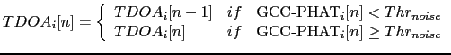
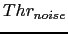

Next: Dual-Pass Viterbi Post-Processing Up: TDOA Values Selection Previous: TDOA Values Selection Contents
The first filtering proposed intends to detect those TDOA values that are not reliable. A TDOA value does not show any useful information when it is computed over a silence (or mainly silence) region or when the SNR of the signals being compared (either one) are very low, making them very dissimilar. The first problem could be addressed by using a speech/non-speech detector prior to any further processing. Initial experiments indicated that further errors were introduced due to the detector used. An improvement was obtained by applying a simple continuity filter on the TDOA values based on their GCC-PHAT values by using a ``noise threshold'':
|  | (5.12) |
where  is the ``noise threshold'', defined as the minimum correlation value at which it can be considered that the correlation is returning feasible results. It should be considered independently in every meeting as the correlation values are dependent not only on the signal itself but also on the microphone distribution in the different meeting rooms. In order to find an appropriate value for it, the distribution of computed correlation values needs to be evaluated for each meeting. In the diarization system presented for RT05s (Anguera, Wooters, Peskin and Aguilo, 2005) a constant threshold fax fixed for all meetings. This caused the system to filter out a high amount of delays in some meetings while keeping non-speech segments unmodified from others. For RT06s a threshold was computed for each meeting as the value that filters out the 10% of lower cross-correlation values. This considers that in each meeting there are 10% of frames that either are non-speech or unreliable in terms of TDOA estimation.
Figure 5.4 shows the histogram of the two AMI meetings present in RT05s to illustrate this change. Such histograms are generated taking the output values from the GCC-PHAT for the used TDOA values, placing them in bins with minimum value 0 and maximum 1, and normalizing it. Most of the meetings present a bimodal histogram like for AMI_20041210-1052, where the relative minimum between the modes falls around the 10% of the values. In such case selecting a noise threshold at 10% absolute (0.1 value applied to the GCC-PHAT output) or finding the threshold at 10% of all computed values (0.0842 over 1 for AMI_20041210-1052) gives almost the same result. On the other hand, some meetings, like AMI_20050204-1206, obtain a poor distribution of GCC-PHAT values, concentrating them in the lower part of the histogram. In this case there is a big difference between the two kinds of thresholding (0.1 versus 0.0532 for AMI_20050204-1206).
Within each meeting there is also a slight difference in the distributions of each of the channel's correlations. It was found that there was no difference wether to compute an individual threshold for each channel or one global threshold for all channels, therefore a global threshold was used for all channels in the system.